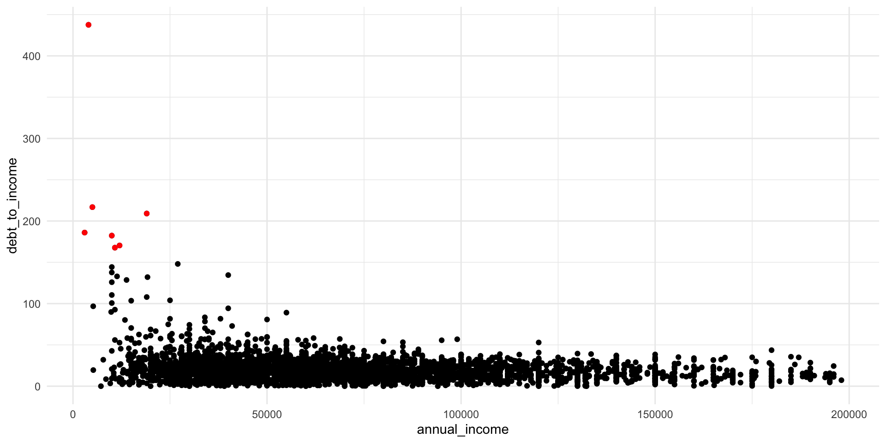
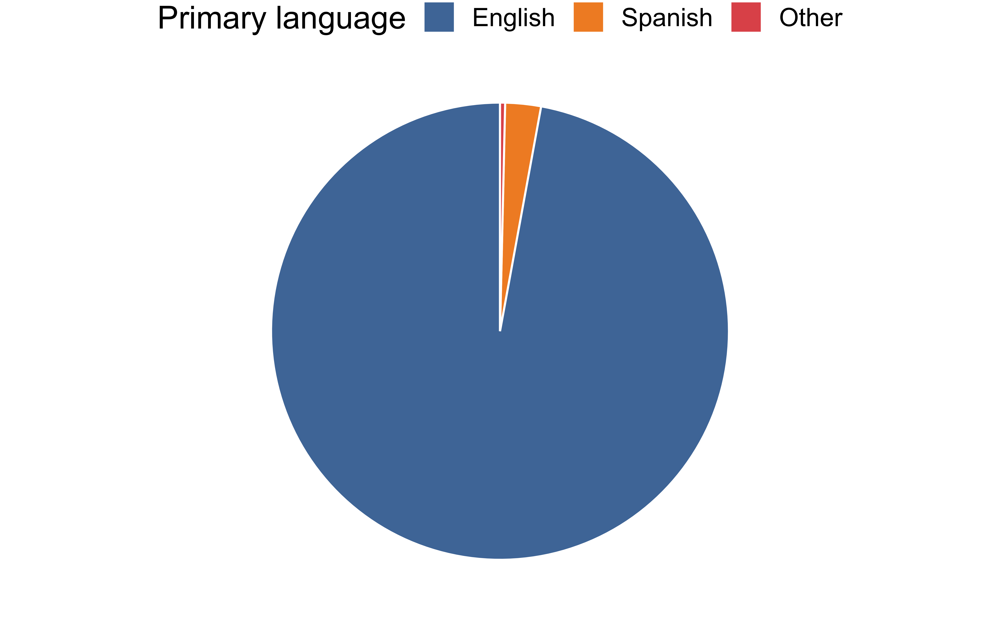
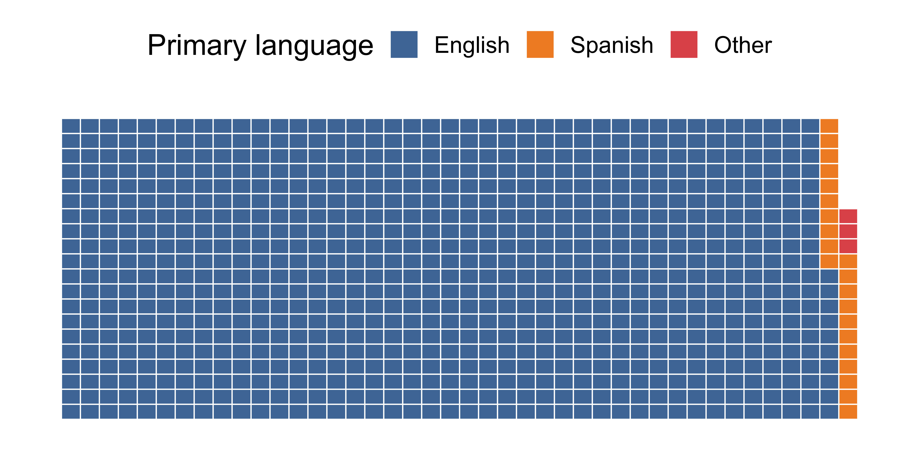
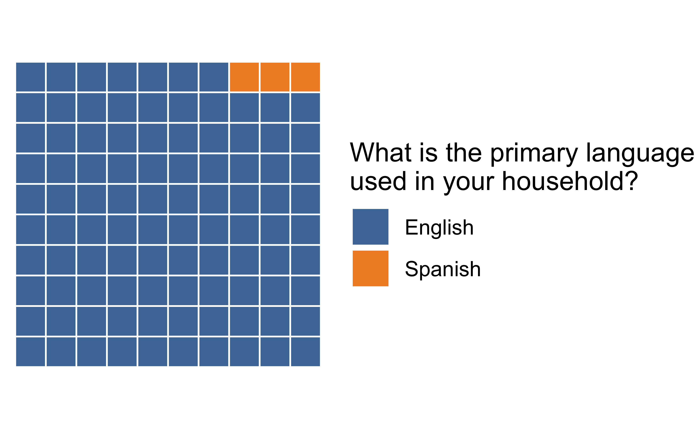
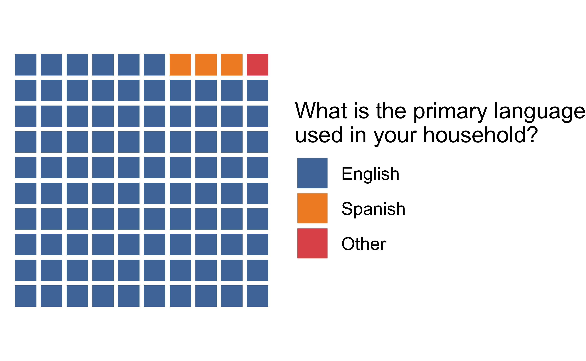
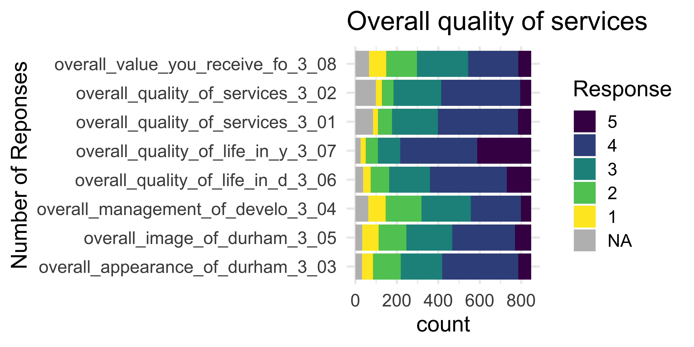
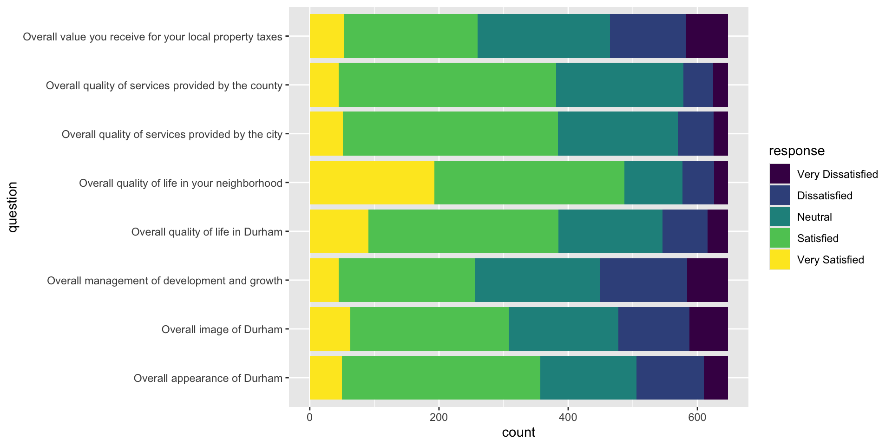
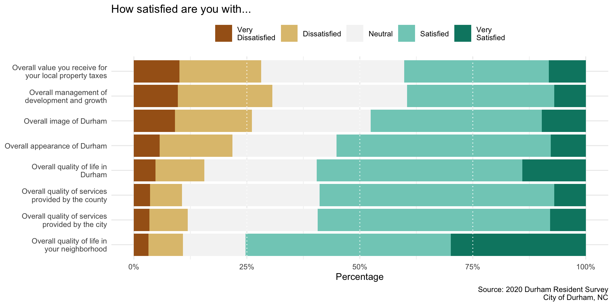
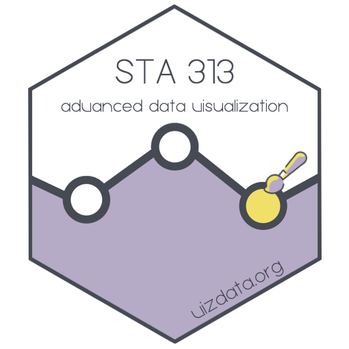

Lecture 11
Duke University
STA 313 - Spring 2024
Suppose you have the following plot of 5000 loans, with loans given to borrowers with high debt to income ratios highlighted in red.
You add some text annotation to the plot using two methods: geom_text() and annotate(). You also record how long it takes to run the code required to generate the annotated plots.
geom_text():
These two plots can be seen below:
Warning in geom_text(aes(x = 25000, y = 300, label = "High debt-to-income ratio"), : All aesthetics have length 1, but the data has 5000 rows.
ℹ Did you mean to use `annotate()`?# load packages
library(tidyverse)
library(waffle)
library(ggthemes)
# set theme for ggplot2
ggplot2::theme_set(ggplot2::theme_minimal(base_size = 16))
# set figure parameters for knitr
knitr::opts_chunk$set(
fig.width = 7, # 7" width
fig.asp = 0.618, # the golden ratio
fig.retina = 3, # dpi multiplier for displaying HTML output on retina
fig.align = "center", # center align figures
dpi = 300 # higher dpi, sharper image
)Rows: 848
Columns: 226
$ id <dbl> 1, 2, 3, 4, 5, 6, 7, 8, 9, 10,…
$ overall.quality.of.police.p.1.01 <dbl> 3, 4, 9, 3, 2, 5, 4, 1, 4, 5, …
$ overall.quality.of.sheriff.1.02 <dbl> 3, 4, 9, 3, 2, 4, 4, 1, 9, 5, …
$ overall.quality.of.fire.and.1.03 <dbl> 3, 4, 9, 4, 4, 4, 9, 4, 3, 5, …
$ response.time.for.fire.serv.1.04 <dbl> 3, 5, 9, 4, 4, 4, 9, 4, 3, 9, …
$ overall.quality.of.ems.serv.1.05 <dbl> 3, 5, 9, 4, 4, 4, 9, 4, 3, 4, …
$ response.time.for.ems.servi.1.06 <dbl> 3, 5, 9, 4, 3, 4, 9, 4, 3, 3, …
$ overall.maintenance.of.city.1.07 <dbl> 2, 3, 4, 4, 2, 3, 3, 1, 4, 2, …
$ overall.ease.of.travel.with.1.08 <dbl> 3, 4, 4, 4, 4, 2, 4, 3, 3, 2, …
$ overall.quality.of.the.publ.1.09 <dbl> 9, 3, 1, 9, 9, 2, 3, 1, 9, 9, …
$ overall.quality.of.bicycle.1.10 <dbl> 9, 3, 3, 3, 4, 2, 3, 4, 3, 4, …
$ overall.quality.of.pedestri.1.11 <dbl> 9, 3, 4, 3, 2, 2, 2, 4, 3, 4, …
$ overall.quality.of.water.an.1.12 <dbl> 9, 5, 5, 4, 4, 3, 4, 4, 4, 4, …
$ overall.enforcement.of.code.1.13 <dbl> 3, 3, 9, 4, 3, 5, 3, 2, 3, 4, …
$ overall.quality.of.customer.1.14 <dbl> 4, 5, 9, 4, 4, 3, 4, 2, 3, 3, …
$ overall.quality.of.customer.1.15 <dbl> 4, 5, 9, 9, 4, 3, 9, 2, 3, 3, …
$ overall.effectiveness.of.co.1.16 <dbl> 3, 4, 4, 4, 3, 3, 3, 2, 3, 4, …
$ overall.quality.of.parks.an.1.17 <dbl> 4, 4, 4, 4, 3, 2, 9, 2, 3, 4, …
$ overall.quality.of.library.1.18 <dbl> 9, 4, 4, 4, 9, 4, 5, 4, 3, 4, …
$ overall.quality.of.services.1.19 <dbl> 9, 3, 9, 9, 9, 9, 9, 3, 9, 2, …
$ overall.quality.of.public.h.1.20 <dbl> 9, 4, 9, 3, 9, 9, 9, 3, 3, 2, …
$ overall.quality.of.tax.admi.1.21 <dbl> 9, 4, 4, 3, 3, 3, 4, 3, 3, 2, …
$ overall.quality.of.public.s.1.22 <dbl> 9, 3, 9, 3, 1, 1, 3, 1, 9, 3, …
$ overall.quality.of.charter.1.23 <dbl> 9, 9, 9, 9, 3, 9, 9, 4, 9, 9, …
$ overall.quality.of.private.1.24 <dbl> 9, 9, 9, 9, 4, 4, 4, 4, 9, 9, …
$ st.2.01 <dbl> 7, 11, 9, 1, 7, 22, 8, 1, 1, 2…
$ nd.2.02 <dbl> 13, 7, 10, 2, 1, 9, 11, 2, 7, …
$ rd.2.03 <dbl> 16, 17, 22, 17, 22, 10, 1, 22,…
$ overall.quality.of.services.3.01 <dbl> 3, 4, 4, 4, 4, 3, 5, 2, 4, 3, …
$ overall.quality.of.services.3.02 <dbl> 3, 4, 4, 4, 4, 4, 4, 4, 4, 3, …
$ overall.appearance.of.durham.3.03 <dbl> 2, 4, 4, 4, 4, 4, 4, 2, 3, 2, …
$ overall.management.of.develo.3.04 <dbl> 2, 2, 4, 4, 3, 2, 3, 2, 3, 2, …
$ overall.image.of.durham.3.05 <dbl> 2, 4, 4, 4, 2, 1, 4, 2, 3, 2, …
$ overall.quality.of.life.in.d.3.06 <dbl> 2, 4, 4, 3, 4, 4, 4, 3, 3, 2, …
$ overall.quality.of.life.in.y.3.07 <dbl> 5, 5, 4, 4, 5, 4, 3, 5, 4, 5, …
$ overall.value.you.receive.fo.3.08 <dbl> 3, 5, 4, 4, 3, 3, 4, 4, 2, 4, …
$ city.government.4.01 <dbl> 3, 5, 3, 4, 4, 5, 5, 1, 3, 2, …
$ county.government.4.02 <dbl> 3, 5, 3, 4, 3, 4, 4, 1, 3, 2, …
$ state.government.4.03 <dbl> 2, 4, 3, 3, 4, 4, 4, 1, 2, 2, …
$ federal.government.4.04 <dbl> 3, 1, 1, 1, 3, 5, 1, 1, 2, 2, …
$ durham.public.school.system.4.05 <dbl> 9, 5, 9, 3, 9, 9, 9, 1, 9, 2, …
$ st.5.01 <dbl> 7, 1, 6, 2, 6, 6, 6, 9, 3, 12,…
$ nd.5.02 <dbl> 6, 2, 11, 1, 5, 4, 7, 4, 2, 4,…
$ rd.5.03 <dbl> 12, 10, 4, 11, 4, 12, 2, 10, 7…
$ th.5.04 <dbl> 9, 7, 12, 6, 2, 7, 12, 3, 1, 7…
$ th.5.05 <dbl> 1, 6, 9, 4, 1, 2, 9, 8, 4, 2, …
$ public.indoor.gathering.6.01 <dbl> 5, 5, 9, 5, 5, 5, 9, 5, 5, 5, …
$ private.indoor.gathering.wit.6.02 <dbl> 2, 5, 9, 5, 3, 5, 4, 5, 4, 5, …
$ public.outdoor.gathering.6.03 <dbl> 5, 5, 2, 5, 4, 2, 9, 2, 4, 4, …
$ private.outdoor.gathering.wi.6.04 <dbl> 3, 5, 2, 5, 4, 2, 4, 2, 5, 4, …
$ workplace.6.05 <dbl> 5, 5, 9, 5, 3, 5, 9, 5, 5, 5, …
$ m1.children.are.enrolled.in.dur.7.01 <dbl> NA, NA, NA, NA, NA, NA, NA, NA…
$ m2.children.are.enrolled.in.a.c.7.02 <dbl> NA, NA, NA, NA, NA, NA, NA, 2,…
$ m3.children.are.enrolled.in.a.p.7.03 <dbl> NA, NA, NA, NA, NA, NA, NA, 3,…
$ m4.children.go.to.school.outsid.7.04 <dbl> NA, NA, NA, NA, NA, NA, NA, NA…
$ m5.children.went.to.or.graduate.7.05 <dbl> NA, NA, NA, NA, NA, NA, NA, NA…
$ m6.children.went.to.or.graduate.7.06 <dbl> NA, NA, NA, NA, NA, NA, NA, NA…
$ m7.children.went.to.or.graduate.7.07 <dbl> NA, NA, NA, NA, NA, 7, NA, NA,…
$ m8.children.went.to.or.graduate.7.08 <dbl> NA, NA, NA, NA, NA, NA, NA, NA…
$ m9.children.are.homeschooled.7.09 <dbl> NA, NA, NA, NA, NA, NA, NA, NA…
$ this.question.does.not.appl10.t.7.10 <dbl> 10, 10, 10, 10, 10, NA, 10, NA…
$ manages.the.education.budget.8.01 <dbl> 9, 9, 9, 9, 3, 3, 9, 1, 3, 2, …
$ attracts.high.quality.teacher.8.02 <dbl> 9, 9, 9, 9, 2, 3, 9, 1, 3, 4, …
$ is.transparent.about.educatio.8.03 <dbl> 9, 9, 9, 9, 2, 9, 9, 1, 3, 1, …
$ encourages.community.involvem.8.04 <dbl> 9, 9, 9, 9, 3, 9, 9, 4, 3, 1, …
$ ensures.quality.education.for.8.05 <dbl> 9, 9, 9, 9, 2, 2, 9, 1, 3, 1, …
$ has.effective.leadership.in.k.8.06 <dbl> 9, 9, 9, 9, 2, 2, 9, 1, 3, 1, …
$ when.walking.alone.in.your.n.9.01 <dbl> 5, 5, 5, 4, 4, 5, 4, 5, 5, 5, …
$ when.walking.alone.in.your.n.9.02 <dbl> 4, 4, 4, 2, 4, 5, 2, 4, 3, 4, …
$ in.downtown.durham.9.03 <dbl> 3, 4, 4, 4, 3, 3, 4, 4, 4, 2, …
$ in.durham.overall.9.04 <dbl> 3, 4, 4, 4, 2, 4, 4, 3, 2, 2, …
$ when.using.city.recreation.c.9.05 <dbl> 4, 5, 9, 3, 3, 4, 9, 3, 9, 2, …
$ when.visiting.city.parks.9.06 <dbl> 4, 5, 4, 4, 3, 4, 4, 3, 9, 2, …
$ overall.police.relationship.10.01 <dbl> 3, 4, 9, 4, 3, 5, 4, 3, 4, 5, …
$ `overall.sheriff's.office.re.10.02` <dbl> 3, 4, 9, 3, 3, 5, 9, 3, 9, 5, …
$ animal.control.services.10.03 <dbl> 3, 5, 9, 3, 3, 9, 9, 4, 3, 5, …
$ enforcement.of.traffic.safe.10.04 <dbl> 2, 4, 9, 3, 3, 4, 3, 4, 3, 5, …
$ local.court.system.10.05 <dbl> 3, 9, 9, 3, 3, 9, 9, 3, 2, 2, …
$ how.satisfied.are.you.with.the.avail.11 <dbl> 9, 5, 9, 2, 4, 9, 3, 9, 9, 4, …
$ do.your.monthly.housing.cost.12.01 <dbl> 2, 2, 2, 9, 2, 2, 2, 2, 9, 1, …
$ are.you.able.to.find.housing.12.02 <dbl> 1, 9, 1, 1, 1, 1, 1, 1, 1, 2, …
$ do.you.have.major.home.repai.12.03 <dbl> 2, 1, 2, 2, 2, 2, 2, 2, 2, 2, …
$ greenways.and.trails.13.01 <dbl> 4, 4, 4, 4, 4, 3, 4, 4, 9, 4, …
$ outdoor.athletic.fields.and.13.02 <dbl> 3, 3, 4, 9, 3, 3, 9, 4, 9, 2, …
$ customer.service.provided.b.13.03 <dbl> 9, 4, 4, 3, 3, 9, 9, 9, 9, 4, …
$ public.art.13.04 <dbl> 2, 4, 4, 4, 5, 9, 4, 3, 3, 4, …
$ current.state.of.race.relat.14.01 <dbl> 1, 3, 4, 4, 2, 3, 3, 4, 1, 2, …
$ progress.addressing.racial.14.02 <dbl> 1, 3, 3, 4, 2, 3, 3, 4, 2, 2, …
$ condition.of.streets.in.yo.15.01 <dbl> 2, 2, 4, 4, 2, 4, 2, 4, 4, 3, …
$ condition.of.sidewalks.in.15.02 <dbl> 9, 3, 4, 4, 3, 4, 2, 9, 9, 9, …
$ condition.of.bicycle.facil.15.03 <dbl> 9, 3, 3, 4, 9, 3, 4, 2, 9, 4, …
$ appearance.of.landscaping.15.04 <dbl> 3, 3, 4, 4, 3, 4, 4, 2, 3, 4, …
$ condition.of.parks.and.ope.15.05 <dbl> 3, 4, 4, 4, 4, 3, 4, 4, 9, 2, …
$ condition.of.recreation.ce.15.06 <dbl> 3, 5, 9, 3, 3, 4, 9, 9, 9, 4, …
$ overall.appearance.of.majo.15.07 <dbl> 3, 3, 9, 3, 4, 4, 4, 2, 3, 2, …
$ condition.of.public.school.15.08 <dbl> 9, 2, 9, 9, 9, 4, 9, 9, 9, 1, …
$ condition.of.trails.and.gr.15.09 <dbl> 9, 4, 4, 4, 4, 3, 4, 4, 9, 4, …
$ condition.of.public.art.15.10 <dbl> 2, 3, 4, 4, 5, 9, 4, 4, 3, 4, …
$ condition.of.aquatic.facil.15.11 <dbl> 9, 4, 9, 4, 9, 4, 9, 9, 3, 4, …
$ condition.of.parking.15.12 <dbl> 2, 4, 9, 3, 3, 3, 3, 1, 1, 3, …
$ st.16.01 <dbl> 1, 8, 9, 1, 1, 12, 1, 7, 12, 8…
$ nd.16.02 <dbl> 12, 3, 3, 2, 12, 5, 2, 8, 10, …
$ rd.16.03 <dbl> 7, 1, 5, 9, 4, 9, 3, 4, 7, 7, …
$ it.is.too.far.from.m1.home.to.17a.01 <dbl> NA, NA, 1, NA, 1, 1, NA, 1, NA…
$ the.bus.does.not.serve.where.17a.02 <dbl> NA, NA, 2, NA, 2, 2, NA, NA, N…
$ i.prefer.driving.m3.carneed.17a.03 <dbl> 3, NA, NA, 3, 3, 3, 3, 3, 3, 3…
$ i.have.safet4.concerns.17a.04 <dbl> NA, NA, NA, 4, NA, NA, NA, 4, …
$ the.bus.would.take.too.long.17a.05 <dbl> NA, NA, 5, NA, NA, NA, 5, NA, …
$ other.17a.06 <dbl> NA, NA, NA, NA, NA, NA, NA, NA…
$ we.ride.public.transit.in.dur.17a.07 <dbl> NA, 7, NA, NA, NA, NA, NA, NA,…
$ `i.don't.havecannot.use.a.car.17b.01` <dbl> NA, NA, NA, NA, NA, NA, NA, NA…
$ the.bus.gets.me.where.i.need.17b.02 <dbl> NA, NA, NA, NA, NA, NA, NA, NA…
$ i.ride.the.bus.for.environmen.17b.03 <dbl> NA, 3, NA, NA, NA, NA, NA, NA,…
$ parking.at.m4.work.is.difficu.17b.04 <dbl> NA, 4, NA, NA, NA, NA, NA, NA,…
$ taking.the.bus.is.cheaper.tha.17b.05 <dbl> NA, NA, NA, NA, NA, NA, NA, NA…
$ other.17b.06 <dbl> NA, NA, NA, NA, NA, NA, NA, NA…
$ `we.don't.ride.public.transit.17b.07` <dbl> 7, NA, 7, 7, 7, 7, 7, 7, 7, 7,…
$ please.define.other.17b.6 <chr> NA, NA, NA, NA, NA, NA, NA, NA…
$ ease.of.travel.by.walking.18.01 <dbl> 9, 4, 2, 4, 4, 3, 2, 3, 3, 4, …
$ ease.of.travel.by.biking.18.02 <dbl> 9, 3, 2, 3, 4, 2, 3, 2, 9, 4, …
$ ease.of.travel.by.bus.godu.18.03 <dbl> 9, 3, 2, 3, 9, 3, 9, 9, 9, 3, …
$ quality.of.downtown.parking.18.04 <dbl> 2, 3, 3, 3, 3, 3, 4, 3, 1, 4, …
$ the.ability.in.your.neighbo.18.05 <dbl> 4, 5, 4, 4, 4, 4, 2, 5, 5, 5, …
$ solid.waste.collection.serv.19.01 <dbl> 9, 5, 5, 4, 4, 9, 5, 9, 5, 4, …
$ curbside.recycling.services.19.02 <dbl> 4, 5, 5, 4, 4, 9, 5, 4, 5, 4, …
$ yard.waste.leavestree.lim.19.03 <dbl> 2, 5, 9, 9, 9, 9, 5, 9, 9, 9, …
$ city.waste.disposal.and.rec.19.04 <dbl> 4, 3, 9, 4, 9, 3, 4, 9, 4, 9, …
$ county.solid.waste.convenie.19.05 <dbl> 3, 9, 9, 4, 9, 4, 9, 9, 9, 4, …
$ quality.of.drinking.water.19.06 <dbl> 9, 4, 4, 5, 4, 4, 5, 1, 5, 4, …
$ sewer.services.19.07 <dbl> 9, 4, 4, 4, 3, 4, 4, 4, 5, 4, …
$ overall.management.of.publi.19.08 <dbl> 3, 4, 4, 4, 4, 4, 4, 2, 3, 4, …
$ stream.and.lake.protection.19.09 <dbl> 3, 4, 9, 4, 9, 4, 9, 3, 3, 4, …
$ durham.residents.learn.about.n.20.01 <dbl> 3, 2, 3, 1, 3, 1, 6, 3, 1, 2, …
$ it.is.easy.for.residents.to.ha.20.02 <dbl> 2, 1, 4, 3, 2, 2, 5, 4, 2, 1, …
$ `the.character.of.durham's.neig.20.03` <dbl> 1, 5, 6, 4, 5, 3, 4, 2, 3, 5, …
$ durham.should.have.more.racial.20.04 <dbl> 5, 3, 5, 2, 4, 6, 1, 5, 5, 3, …
$ i.would.like.to.have.shopping.20.05 <dbl> 4, 6, 1, 5, 1, 5, 3, 1, 4, 4, …
$ i.would.be.ok.with.a.greater.v.20.06 <dbl> 6, 4, 2, 6, 6, 4, 2, 6, 6, 6, …
$ are.you.a.resident.of.durham.city.22 <dbl> 2, 1, 2, 1, 1, 2, 1, 2, 1, 2, …
$ availability.of.information.22a.01 <dbl> NA, 3, NA, 3, 4, NA, 3, NA, 3,…
$ ease.of.locating.informatio.22a.02 <dbl> NA, 2, NA, 3, 4, NA, 4, NA, 4,…
$ your.experience.engaging.wi.22a.03 <dbl> NA, 3, NA, 3, 3, NA, 4, NA, 3,…
$ level.of.public.involvement.22a.04 <dbl> NA, 3, NA, 4, 3, NA, 9, NA, 3,…
$ city.efforts.to.keep.you.in.22a.05 <dbl> NA, 4, NA, 4, 4, NA, 3, NA, 3,…
$ city.of.durham.website.22b.01 <dbl> NA, 3, NA, 3, 3, NA, 3, NA, 2,…
$ city.of.durham.twitter.feed.22b.02 <dbl> NA, 9, NA, 3, 1, NA, 4, NA, 1,…
$ city.of.durham.facebook.pag.22b.03 <dbl> NA, 9, NA, 2, 1, NA, 2, NA, 1,…
$ mailings.of..direct.contact.22b.04 <dbl> NA, 3, NA, 3, 3, NA, 2, NA, 2,…
$ durham.television.network.22b.05 <dbl> NA, 3, NA, 1, 1, NA, 1, NA, 2,…
$ traditional.media.tv..news.22b.06 <dbl> NA, 5, NA, 3, 4, NA, 4, NA, 1,…
$ friendscolleaguesword.of.22b.07 <dbl> NA, 5, NA, 3, 1, NA, 2, NA, 3,…
$ other.22b.08 <dbl> NA, NA, NA, NA, NA, NA, NA, NA…
$ during.the.past.year..have.you.cont.22c <dbl> NA, 1, NA, 1, 2, NA, 1, NA, 2,…
$ how.easy.the.city.governme.22d.01 <dbl> NA, 4, NA, 4, NA, NA, 4, NA, N…
$ courtesy.of.city.employee.22d.02 <dbl> NA, 4, NA, 3, NA, NA, 5, NA, N…
$ accuracy.of.the.informatio.22d.03 <dbl> NA, 4, NA, 4, NA, NA, 4, NA, N…
$ appropriateness.of.city.em.22d.04 <dbl> NA, 4, NA, 4, NA, NA, 4, NA, N…
$ timeliness.of.city.employe.22d.05 <dbl> NA, 4, NA, 4, NA, NA, 5, NA, N…
$ the.resolution.of.your.iss.22d.06 <dbl> NA, 4, NA, 4, NA, NA, 5, NA, N…
$ availability.of.informatio.23a.01 <dbl> 9, 3, 3, 4, 4, 3, 9, 3, 3, 4, …
$ ease.of.locating.informati.23a.02 <dbl> 3, 2, 4, 3, 4, 2, 9, 4, 3, 4, …
$ your.experience.engaging.w.23a.03 <dbl> 3, 3, 9, 3, 3, 3, 9, 3, 3, 4, …
$ level.of.public.involvemen.23a.04 <dbl> 2, 4, 9, 3, 9, 3, 9, 3, 3, 2, …
$ county.efforts.to.keep.you.23a.05 <dbl> 3, 3, 3, 4, 3, 3, 9, 2, 3, 2, …
$ your.ability.to.get.timely.23a.06 <dbl> 3, 5, 9, 4, 5, 3, 3, 4, 3, 4, …
$ durham.county.website.23b.01 <dbl> 9, 3, 2, 3, 2, 2, 2, 3, 2, 5, …
$ durham.county.twitter.feed.23b.02 <dbl> 9, 1, 1, 3, 1, 1, 3, 1, 1, 1, …
$ durham.county.facebook.pag.23b.03 <dbl> 9, 1, 1, 2, 1, 1, 1, 5, 1, 5, …
$ durham.county.nextdoor.23b.04 <dbl> 9, 1, 3, 1, 3, 1, 3, 3, 5, 5, …
$ mailings.of..direct.contac.23b.05 <dbl> 9, 2, 2, 3, 3, 3, 2, 2, 3, 1, …
$ durham.county.tv.show.23b.06 <dbl> 9, 1, 1, 1, 1, 1, 1, 1, 2, 1, …
$ traditional.media.tv..new.23b.07 <dbl> 9, 5, 2, 3, 5, 5, 4, 5, 2, 5, …
$ friendscolleaguesword.of.23b.08 <dbl> 3, 5, 2, 3, 2, 2, 1, 4, 3, 5, …
$ other.23b.09 <dbl> NA, NA, NA, NA, NA, NA, NA, NA…
$ please.define.other.23b.9 <chr> NA, NA, NA, NA, NA, NA, NA, NA…
$ during.the.past.year..have.you.cont.23c <dbl> 1, 2, 2, 2, 2, 1, 2, 1, 2, 1, …
$ how.easy.the.county.govern.23d.01 <dbl> 4, NA, NA, NA, NA, 3, NA, 2, N…
$ courtesy.of.county.employe.23d.02 <dbl> 4, NA, NA, NA, NA, 9, NA, 2, N…
$ accuracy.of.the.informatio.23d.03 <dbl> 4, NA, NA, NA, NA, 3, NA, 2, N…
$ appropriateness.of.county.23d.04 <dbl> 4, NA, NA, NA, NA, 9, NA, 2, N…
$ timeliness.of.county.emplo.23d.05 <dbl> 4, NA, NA, NA, NA, 9, NA, 2, N…
$ the.resolution.of.your.iss.23d.06 <dbl> 4, NA, NA, NA, NA, 2, NA, 2, N…
$ as.a.place.to.live.24.01 <dbl> 3, 5, 4, 4, 4, 4, 4, 3, 4, 3, …
$ as.a.place.to.work.24.02 <dbl> 4, 4, 9, 4, 9, 5, 9, 3, 4, 3, …
$ as.a.place.to.play.24.03 <dbl> 3, 4, 9, 4, 3, 3, 9, 4, 4, 3, …
$ as.a.place.to.raise.childre.24.04 <dbl> 2, 4, 9, 9, 2, 4, 9, 3, 9, 2, …
$ as.a.place.to.educate.child.24.05 <dbl> 2, 4, 9, 9, 1, 4, 9, 2, 9, 2, …
$ as.a.place.to.retire.24.06 <dbl> 2, 4, 4, 4, 4, 4, 9, 1, 4, 2, …
$ as.a.place.to.visit.24.07 <dbl> 3, 4, 3, 3, 5, 4, 4, 2, 3, 2, …
$ as.a.place.to.start.a.busin.24.08 <dbl> 3, 4, 9, 3, 9, 9, 9, 3, 3, 2, …
$ as.a.community.that.is.movi.24.09 <dbl> 1, 5, 4, 4, 3, 3, 4, 3, 3, 2, …
$ affordable.housing.25.01 <dbl> NA, 1, 1, NA, 1, NA, 1, NA, 1,…
$ street.maintenance.25.02 <dbl> 2, NA, NA, 2, 2, NA, NA, NA, 2…
$ sidewalk.construction.25.03 <dbl> NA, NA, NA, 3, 3, NA, 3, NA, N…
$ universal.prek.25.04 <dbl> NA, NA, 4, NA, NA, NA, 4, 4, N…
$ social.services.25.05 <dbl> NA, NA, 5, NA, NA, 5, NA, NA, …
$ outh.programming.25.06 <dbl> NA, NA, 6, NA, NA, NA, NA, 6, …
$ job.creationtraining.25.07 <dbl> NA, 7, NA, NA, 7, NA, NA, 7, 7…
$ communit8led.safet8.initiativ.25.08 <dbl> NA, 8, NA, 8, NA, 8, 8, 8, NA,…
$ law.enforcementled.safet9.ini.25.09 <dbl> 9, NA, NA, NA, 9, 9, 9, NA, 9,…
$ public.school.operations.teac.25.10 <dbl> 10, 10, 10, 10, NA, 10, NA, 10…
$ court.services.25.11 <dbl> NA, 11, NA, NA, NA, 11, NA, NA…
$ i.would.not.increase.funding.f.25.12 <dbl> NA, NA, NA, NA, NA, NA, NA, NA…
$ have.you.or.someone.in.your.househol.26 <dbl> 2, 2, 2, 2, 2, 2, 2, 2, 2, 2, …
$ approximately.how.many.years.have.yo.28 <dbl> 29, 34, 15, 11, 4, 35, 3, 25, …
$ what.is.your.age.29 <dbl> 1, 3, 2, 1, 1, 4, 1, 1, 5, 1, …
$ what.is.your.gender.30 <dbl> 1, 2, 1, 2, 1, 1, 1, 2, 2, 2, …
$ do.you.own.or.rent.your.current.resi.31 <dbl> 1, 2, 1, 1, 1, 1, 1, 2, 1, 1, …
$ asianpacific.islander.32.01 <dbl> NA, NA, NA, NA, NA, NA, NA, NA…
$ white.32.02 <dbl> NA, 2, 2, 2, NA, 2, 2, 2, 2, 2…
$ native.americaninuit.32.03 <dbl> NA, NA, NA, NA, NA, NA, NA, NA…
$ blackafrican.american.32.04 <dbl> 4, NA, NA, NA, 4, NA, NA, NA, …
$ other.32.05 <dbl> NA, NA, NA, NA, NA, NA, NA, NA…
$ please.define.other.32.5 <chr> NA, NA, NA, NA, NA, NA, NA, NA…
$ are.you.of.hispanic..latino..or..spa.33 <dbl> 2, 2, 1, 2, 2, 2, 2, 2, 2, 2, …
$ what.is.the.primary.language.used.in.34 <dbl> 1, 1, 1, 1, 1, 1, 1, 1, 1, 1, …
$ please.define.other.34.3 <chr> NA, NA, NA, NA, NA, NA, NA, NA…
$ how.might.we.better.provide.service.34a <chr> NA, NA, NA, NA, NA, NA, NA, NA…
$ would.you.say.your.total.annual.hous.35 <dbl> 1, 2, 9, 9, 3, 4, 3, 3, 9, 2, …
$ city <chr> "Durham", "Durham", "Durham", …
$ state <chr> "NC", "NC", "NC", "NC", "NC", …
$ zip <dbl> 27712, 27705, 27703, 27713, 27…
$ pac.zone <dbl> NA, 2, NA, 4, 4, NA, 4, NA, 3,…
$ inside.city.of.durham <chr> "N", "Y", "N", "Y", "Y", "N", …
$ block.lon <dbl> -78877000, -78920000, -7875600…
$ block.lat <dbl> 36087000, 36022000, 35927000, …Rows: 848
Columns: 49
$ id <dbl> 1, 2, 3, 4, 5, 6, 7, 8, NA, 10…
$ overall_quality_of_services_3_01 <dbl> 3, 4, 4, 4, 4, 3, 5, 2, 4, 3, …
$ overall_quality_of_services_3_02 <dbl> 3, 4, 4, 4, 4, 4, 4, 4, 4, 3, …
$ overall_appearance_of_durham_3_03 <dbl> 2, 4, 4, 4, 4, 4, 4, 2, 3, 2, …
$ overall_management_of_develo_3_04 <dbl> 2, 2, 4, 4, 3, 2, 3, 2, 3, 2, …
$ overall_image_of_durham_3_05 <dbl> 2, 4, 4, 4, 2, 1, 4, 2, 3, 2, …
$ overall_quality_of_life_in_d_3_06 <dbl> 2, 4, 4, 3, 4, 4, 4, 3, 3, 2, …
$ overall_quality_of_life_in_y_3_07 <dbl> 5, 5, 4, 4, 5, 4, 3, 5, 4, 5, …
$ overall_value_you_receive_fo_3_08 <dbl> 3, 5, 4, 4, 3, 3, 4, 4, 2, 4, …
$ do_your_monthly_housing_cost_12_01 <dbl> 2, 2, 2, NA, 2, 2, 2, 2, NA, 1…
$ are_you_able_to_find_housing_12_02 <dbl> 1, NA, 1, 1, 1, 1, 1, 1, 1, 2,…
$ do_you_have_major_home_repai_12_03 <dbl> 2, 1, 2, 2, 2, 2, 2, 2, 2, 2, …
$ ease_of_travel_by_walking_18_01 <dbl> NA, 4, 2, 4, 4, 3, 2, 3, 3, 4,…
$ ease_of_travel_by_biking_18_02 <dbl> NA, 3, 2, 3, 4, 2, 3, 2, NA, 4…
$ ease_of_travel_by_bus_godu_18_03 <dbl> NA, 3, 2, 3, NA, 3, NA, NA, NA…
$ quality_of_downtown_parking_18_04 <dbl> 2, 3, 3, 3, 3, 3, 4, 3, 1, 4, …
$ the_ability_in_your_neighbo_18_05 <dbl> 4, 5, 4, 4, 4, 4, 2, 5, 5, 5, …
$ as_a_place_to_live_24_01 <dbl> 3, 5, 4, 4, 4, 4, 4, 3, 4, 3, …
$ as_a_place_to_work_24_02 <dbl> 4, 4, NA, 4, NA, 5, NA, 3, 4, …
$ as_a_place_to_play_24_03 <dbl> 3, 4, NA, 4, 3, 3, NA, 4, 4, 3…
$ as_a_place_to_raise_childre_24_04 <dbl> 2, 4, NA, NA, 2, 4, NA, 3, NA,…
$ as_a_place_to_educate_child_24_05 <dbl> 2, 4, NA, NA, 1, 4, NA, 2, NA,…
$ as_a_place_to_retire_24_06 <dbl> 2, 4, 4, 4, 4, 4, NA, 1, 4, 2,…
$ as_a_place_to_visit_24_07 <dbl> 3, 4, 3, 3, 5, 4, 4, 2, 3, 2, …
$ as_a_place_to_start_a_busin_24_08 <dbl> 3, 4, NA, 3, NA, NA, NA, 3, 3,…
$ as_a_community_that_is_movi_24_09 <dbl> 1, 5, 4, 4, 3, 3, 4, 3, 3, 2, …
$ have_you_or_someone_in_your_househol_26 <dbl> 2, 2, 2, 2, 2, 2, 2, 2, 2, 2, …
$ approximately_how_many_years_have_yo_28 <dbl> 29, 34, 15, 11, 4, 35, 3, 25, …
$ what_is_your_age_29 <dbl> 1, 3, 2, 1, 1, 4, 1, 1, 5, 1, …
$ what_is_your_gender_30 <dbl> 1, 2, 1, 2, 1, 1, 1, 2, 2, 2, …
$ do_you_own_or_rent_your_current_resi_31 <dbl> 1, 2, 1, 1, 1, 1, 1, 2, 1, 1, …
$ asianpacific_islander_32_01 <dbl> NA, NA, NA, NA, NA, NA, NA, NA…
$ white_32_02 <dbl> NA, 2, 2, 2, NA, 2, 2, 2, 2, 2…
$ native_americaninuit_32_03 <dbl> NA, NA, NA, NA, NA, NA, NA, NA…
$ blackafrican_american_32_04 <dbl> 4, NA, NA, NA, 4, NA, NA, NA, …
$ other_32_05 <dbl> NA, NA, NA, NA, NA, NA, NA, NA…
$ please_define_other_32_5 <chr> NA, NA, NA, NA, NA, NA, NA, NA…
$ are_you_of_hispanic_latino_or_spa_33 <dbl> 2, 2, 1, 2, 2, 2, 2, 2, 2, 2, …
$ primary_language <chr> "English", "English", "English…
$ please_define_other_34_3 <chr> NA, NA, NA, NA, NA, NA, NA, NA…
$ how_might_we_better_provide_service_34a <chr> NA, NA, NA, NA, NA, NA, NA, NA…
$ would_you_say_your_total_annual_hous_35 <dbl> 1, 2, NA, NA, 3, 4, 3, 3, NA, …
$ city <chr> "Durham", "Durham", "Durham", …
$ state <chr> "NC", "NC", "NC", "NC", "NC", …
$ zip <dbl> 27712, 27705, 27703, 27713, 27…
$ pac_zone <dbl> NA, 2, NA, 4, 4, NA, 4, NA, 3,…
$ inside_city_of_durham <chr> "N", "Y", "N", "Y", "Y", "N", …
$ block_lon <dbl> -78877000, -78920000, -7875600…
$ block_lat <dbl> 36087000, 36022000, 35927000, …janitor::clean_names()select() with contains(), starts_with(), etc.mutate() with case_match(), e.g.,What is the primary language used in your household?
# A tibble: 4 × 1
primary_language
<chr>
1 English
2 Spanish
3 <NA>
4 Other durham |>
filter(!is.na(primary_language)) |>
count(primary_language) |>
ggplot(aes(x = 1, y = n, fill = primary_language)) +
geom_col(linewidth = 0.5, color = "white") +
coord_polar("y") +
scale_fill_tableau() +
labs(fill = "Primary language") +
theme_void(base_size = 16) +
theme(legend.position = "top")
Using waffle:

Waffles work best when they are square – makes it easier to compare parts to whole which is the purpose of the chart
But what happened to “Other�

durham |>
filter(!is.na(primary_language)) |>
count(primary_language) |>
ggplot(aes(fill = primary_language, values = n)) +
geom_waffle(
n_rows = 10, size = 0.33,
color = "white", flip = TRUE, make_proportional = TRUE
) +
labs(fill = str_wrap("What is the primary language used in your household?", 30)) +
scale_fill_tableau() +
coord_equal() +
theme_void() +
theme_enhance_waffle()With a bit of fudging…
durham |>
filter(!is.na(primary_language)) |>
count(primary_language) |>
mutate(
prop = n / sum(n),
n_norm = 100 * prop,
n_norm = ceiling(n_norm),
n_norm = if_else(primary_language == "English", 96, n_norm)
) |>
ggplot(aes(fill = primary_language, values = n_norm)) +
geom_waffle(
n_rows = 10, size = 1,
color = "white", flip = TRUE, make_proportional = TRUE
) +
labs(fill = str_wrap("What is the primary language used in your household?", 30)) +
scale_fill_tableau() +
coord_equal() +
theme_void() +
theme_enhance_waffle()Rows: 848
Columns: 8
$ overall_quality_of_services_3_01 <dbl> 3, 4, 4, 4, 4, 3, 5, 2, 4, 3, 4, 4, …
$ overall_quality_of_services_3_02 <dbl> 3, 4, 4, 4, 4, 4, 4, 4, 4, 3, 4, 4, …
$ overall_appearance_of_durham_3_03 <dbl> 2, 4, 4, 4, 4, 4, 4, 2, 3, 2, 4, 4, …
$ overall_management_of_develo_3_04 <dbl> 2, 2, 4, 4, 3, 2, 3, 2, 3, 2, 4, 3, …
$ overall_image_of_durham_3_05 <dbl> 2, 4, 4, 4, 2, 1, 4, 2, 3, 2, 4, 3, …
$ overall_quality_of_life_in_d_3_06 <dbl> 2, 4, 4, 3, 4, 4, 4, 3, 3, 2, 4, 4, …
$ overall_quality_of_life_in_y_3_07 <dbl> 5, 5, 4, 4, 5, 4, 3, 5, 4, 5, 4, 5, …
$ overall_value_you_receive_fo_3_08 <dbl> 3, 5, 4, 4, 3, 3, 4, 4, 2, 4, 3, 4, …A very rough starting point:
Go to ae-08 to pick up where we left off and continue improving.
Step 1:

Step 2:

